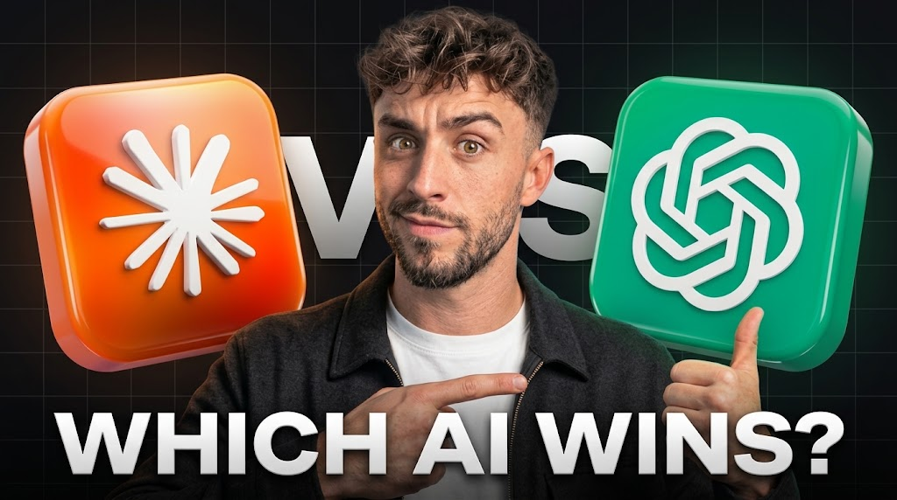

Bodycam & True Crime Thumbnails
Realistic bodycam-style composition built for tension and curiosity.
YOUTUBE THUMBNAIL DESIGNER
AI-assisted thumbnail concepts built with my ChatG Method — combining ChatGPT for creative direction and Gemini for visual generation.

01 — FEATURED WORK
BEST WORK
My four strongest thumbnail designs — the projects that best represent my visual storytelling and design standard.
SEE MY LATEST WORK02 — LATEST WORK
NEW COMPILATIONS
Three new thumbnail concepts created for compilation-style videos.
SEE MY METHOD03 — CHATG METHOD
I use ChatGPT to turn a video title into a strong visual concept and generation prompt, then use Gemini to explore and develop the visual direction.
Identify the subject, story, emotion, conflict, curiosity, and strongest visual opportunity within the title.
Use ChatGPT for:
Turn the concept into a detailed visual-generation prompt.
Use Gemini for:
Review the generated possibilities and identify the strongest visual direction.
Develop the selected direction into the final thumbnail concept.
04 — BODYCAM & TRUE CRIME
SPEC SAMPLES
High-CTR thumbnail concepts inspired by realistic police bodycam and true-crime storytelling.
SEE MORE THUMBNAIL WORK05 — IMPROVED THUMBNAILS
A selection of thumbnail improvement projects focused on stronger visual hierarchy, clearer storytelling, and more immediate viewer curiosity.
SEE THE NEW THUMBNAILS06 — NEW THUMBNAILS
CHANNEL TESTS
Three original thumbnail concepts created as channel test pieces, built from the provided titles and developed to explore different visual hooks, subjects, and storytelling approaches.
07 — ABOUT
I approach thumbnail design by first understanding the story behind a video, then finding a visual concept that communicates the subject quickly and creates curiosity. My ChatG Method combines ChatGPT for creative direction and prompt development with Gemini for visual generation and exploration.
Realistic bodycam-style composition built for tension and curiosity.
Clear focal points and hierarchy designed to earn the click.
Communicating a subject, its story, and its expression in a single frame.
Turning a video title into an image that shows its hook.
Sharpening and enhancing low-resolution source frames for cleaner thumbnails.
Framing and emphasis that keep a reaction the focal point.
Shaping concepts to fit the look of a channel, automation channels included.
Thumbnail production that fits an automation-channel workflow.
ChatGPT for direction, Gemini for generation.
CREATIVE DIRECTION
Title analysis, creative concepts, visual hooks, thumbnail strategy, and prompt development/refinement.
VISUAL GENERATION
Visual generation, exploration, variations, and development of thumbnail directions.
08 — PROCESS
Break down the title.
Find the strongest visual story.
Develop the generation prompt.
Explore the visual direction using Gemini.
Choose and improve the strongest direction.
Create the final thumbnail concept.
LET'S TURN THE IDEA INTO A VISUAL.